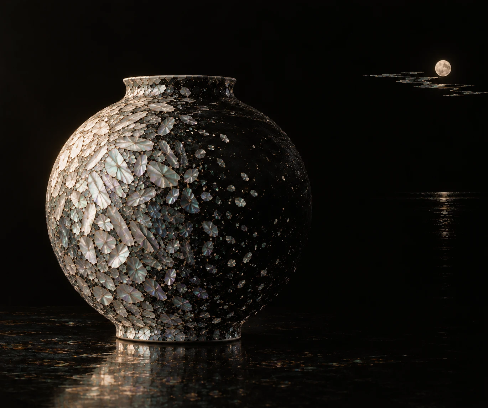
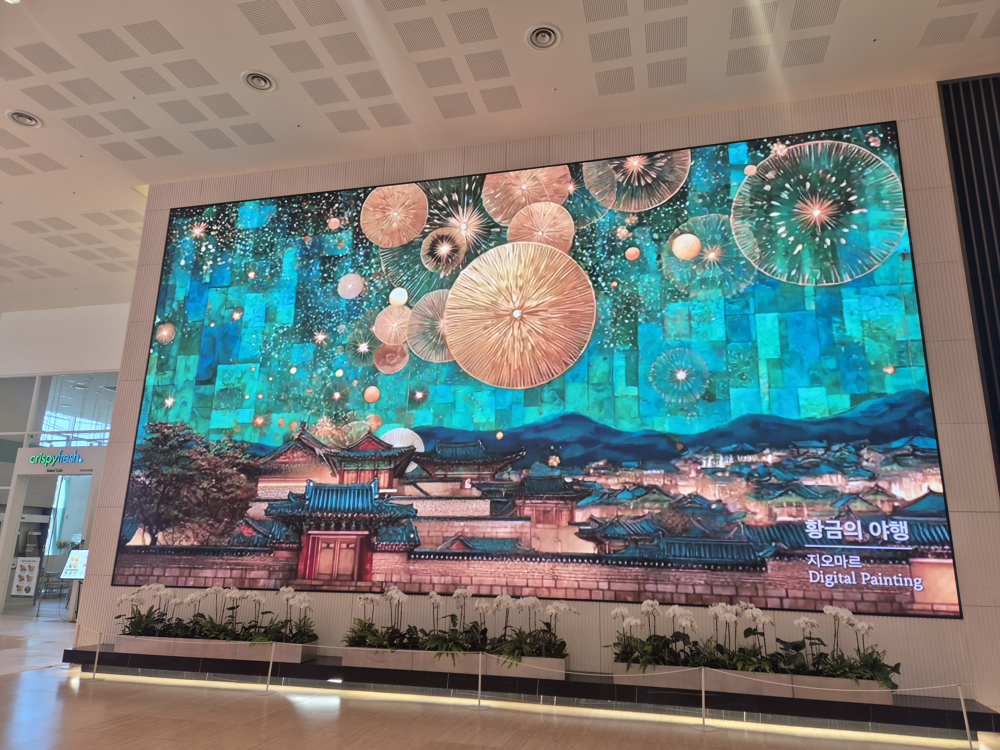
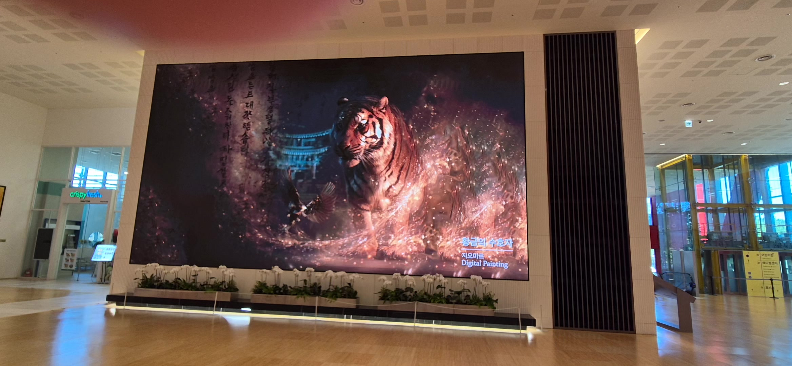

AI Art
한국적 미감과 제주에서 받은 영감을 현대적인 AI 이미지로 표현합니다.

ART, ROOTED IN EMOTION
AI Artist · Creative Educator
AI는 도구,
감성은 이야기,
작품은 나의 언어.
AI Art · Video · Storytelling · Creative Education
제주를 기반으로 AI와 한국적 감성을 연결하는
창작자이자 교육자입니다.
GIOMAR는 AI 기술을 단순한 제작 도구가 아닌, 자신의 이야기를 표현하는 새로운 창작 언어로 바라봅니다.
AI 이미지·영상·그림동화·디지털아트를 제작하며, 교육 경험을 바탕으로 누구나 자신만의 결과물을 완성하는 생성형 AI 창작교육을 진행합니다.
새로운 기술 자체보다, 그 기술로 무엇을 이야기할 것인가를 생각합니다.
한국적 미감과 제주에서 받은 영감을 현대적인 AI 이미지로 표현합니다.
정적인 이미지에 빛과 움직임, 이야기를 더해 영상으로 확장합니다.
이야기와 이미지를 연결해 그림동화와 컬러링북으로 출판합니다.
창작 경험과 교육 경험을 바탕으로 누구나 결과물을 완성할 수 있는 AI 교육을 진행합니다.
제주의 이야기, 한국적 미감, 그리고 나를 발견하는 창작.
제주의 신화와 풍경을 빛과 색으로 풀어냅니다.
제주 설화를 현대적으로 재해석한 AI Art Series
〈진주 귀걸이를 한 소녀〉를 제주에서 다시 보다
한복의 선과 꽃, 자개의 질감을 새로운 이미지로 이어갑니다.
한복과 꽃, 호랑이로 표현한 한국적 미감
자개의 빛과 꽃으로 재해석한 한복
나만의 꽃과 색, 향을 상상하며 감성을 시각 작품으로 표현합니다.
나만의 이야기를 꽃으로 표현하는 창작
나의 감성을 향수로 표현한 창작 콘셉트
붉은 동백과 청록빛 결에 담은 제주의 시간
바다와 금빛 조각이 만나는 빛의 풍경
한복의 선과 꽃의 색으로 피어나는 한국적 미감
정적인 이미지의 분위기를 빛과 움직임, 카메라 워크로 확장합니다.
이미지의 분위기를 빛과 움직임으로 확장한 브랜드 필름입니다.
AI STORY & PUBLISHING
이야기와 이미지를 책으로 연결합니다.
온라인 서점에서 출간 도서를 만나보세요.
WHAT I TEACH
AI를 처음 접하는 사람도 창작의 흐름을 이해하고,
수업 안에서 자신만의 결과물을 직접 완성하도록 가르칩니다.
생성형 AI 입문 및 활용 · ChatGPT 콘텐츠 기획
AI 이미지 제작 · AI 아트·디지털아트 · AI 이미지에서 영상 만들기 · AI 영상·숏폼 제작
AI 그림동화 기획 및 제작 · AI 그림동화·전자책 출판 · AI 인스타툰 제작
Canva 콘텐츠 디자인 · AI 개인 브랜딩 콘텐츠 제작
생성형 AI와 디지털 윤리 · 딥페이크 이해 및 예방교육
이미지·영상·그림동화·숏폼 등 실제 결과물을 완성하는 실습형 교육
생성형 AI 기반 이미지·영상·그림동화 창작교육
2025.09–2026.10생성형 AI를 활용한 동화 만들기
2025.10AI 콘텐츠 제작 · 디지털 윤리 · 딥페이크 예방
2026진로체험 프로그램
2025.11소상공인 디지털 전환 지원사업 · 카카오 비즈니스 활용 교육
2025AI 이미지·AI 영상·그림동화·인스타툰
생성형 AI를 활용한 동화 만들기
디지털 활용 콘텐츠 제작교육 〈나도 영상제작 전문가〉
디지털 기초 역량교육 · 디지털 윤리와 딥페이크 예방
진로체험 프로그램
소상공인 디지털 전환 지원사업 · 카카오 비즈니스 활용 교육
FEATURED PROJECT
2026.05–2027
전시작가로 선정되어, 파크원 대형 미디어월에서
AI 미디어아트 작품을 선보입니다.


수상 · 선정
2025 · 제주컵 국제요트대회 제주젠 GEN AI 영상제
2025 · 제주젠 GEN AI 영상제
2024 · ICT정보문화페스티벌 AI 영상콘텐츠 이미지 부문
2025 · 국제디지털콘텐츠협회 전시회
2024 · 따능스쿨 온:채움 아트 매거진 공모전
전시
「설문대할망: AI로 다시 쓰는 창조의 신화」
2026.03.18–03.28여의도 파크원 미디어아트 · 위 주요 프로젝트 참조
기타 참여 · 2025.04 AI아티스트 클럽(AIAC) 제9회 밋업 공모전
유치원정교사 2급 · 보육교사 1급 · Canva 1급·2급 · AI-POT
국제디지털콘텐츠협회 제주지국장
08 / CONTACT
AI Art · AI Video · Creative Education
강의·특강·워크숍·전시·콘텐츠 프로젝트 협업을 진행합니다.